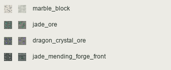
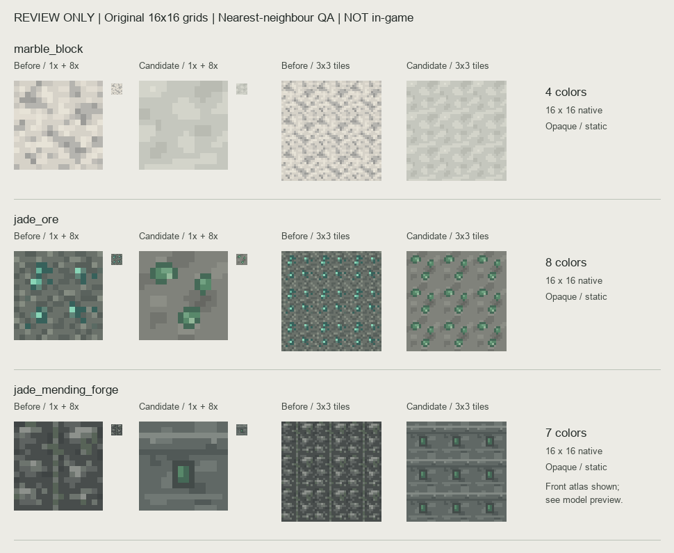
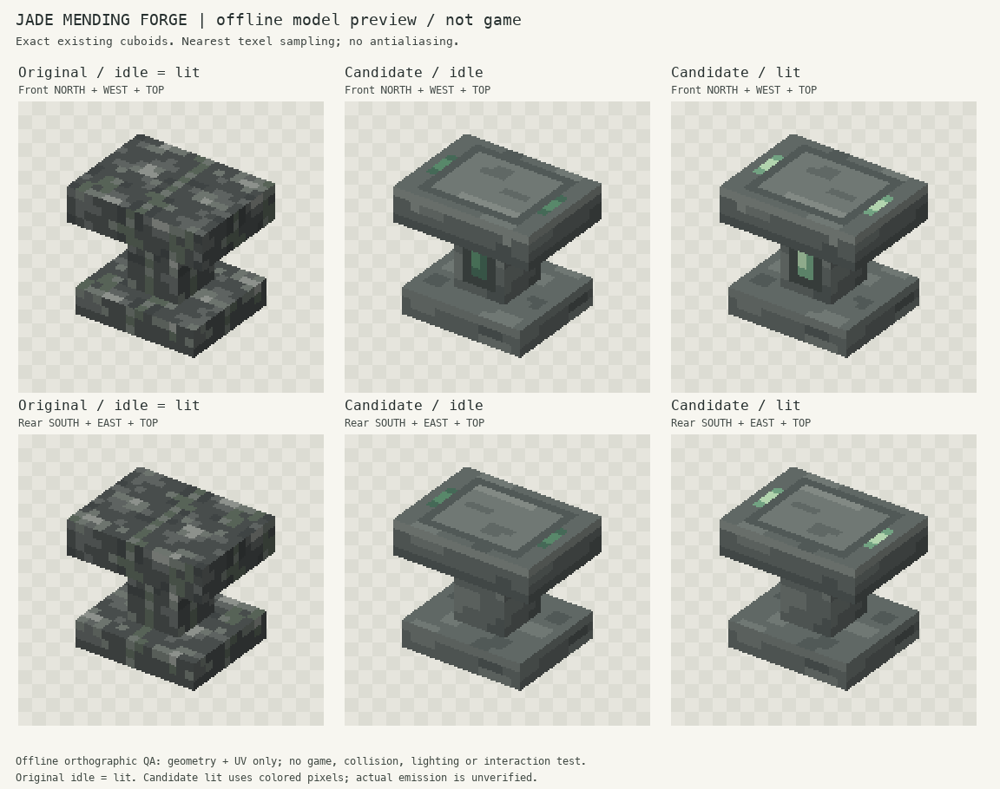
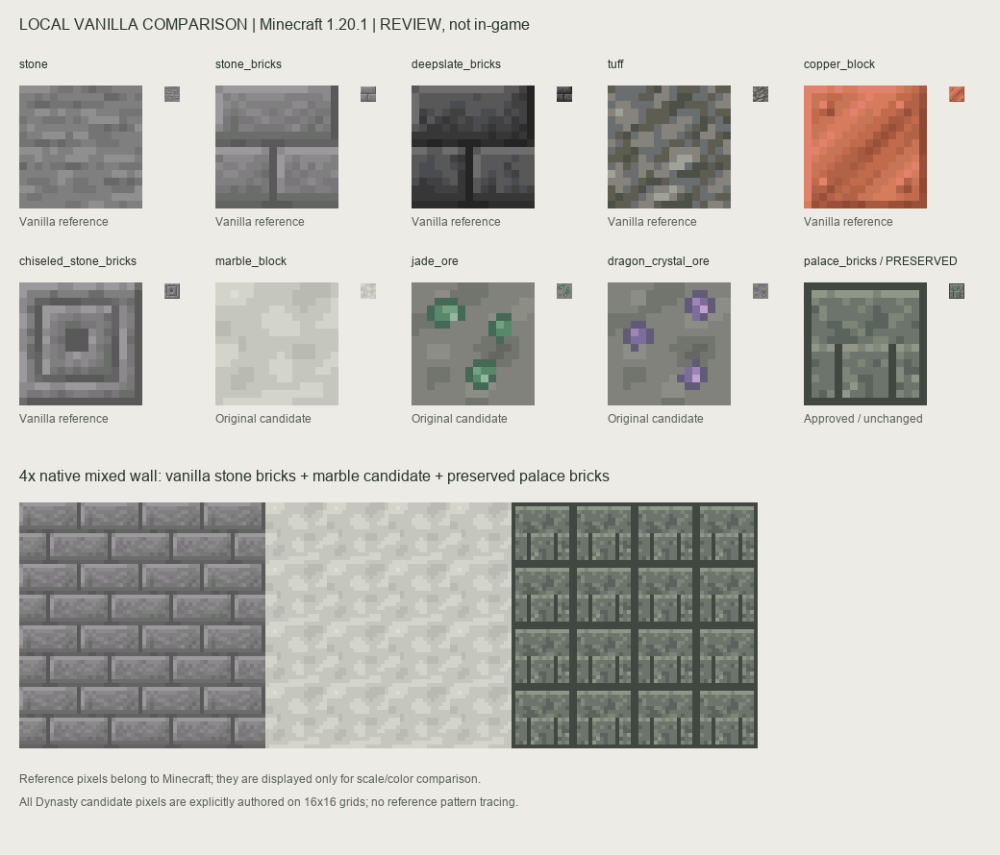
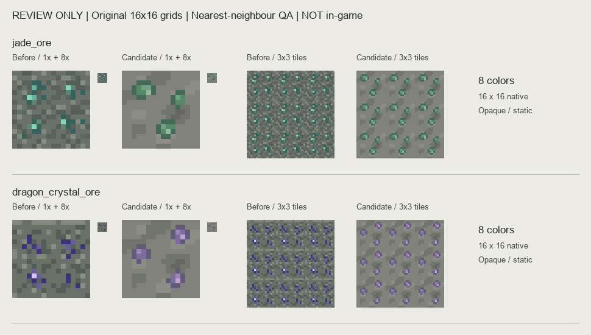
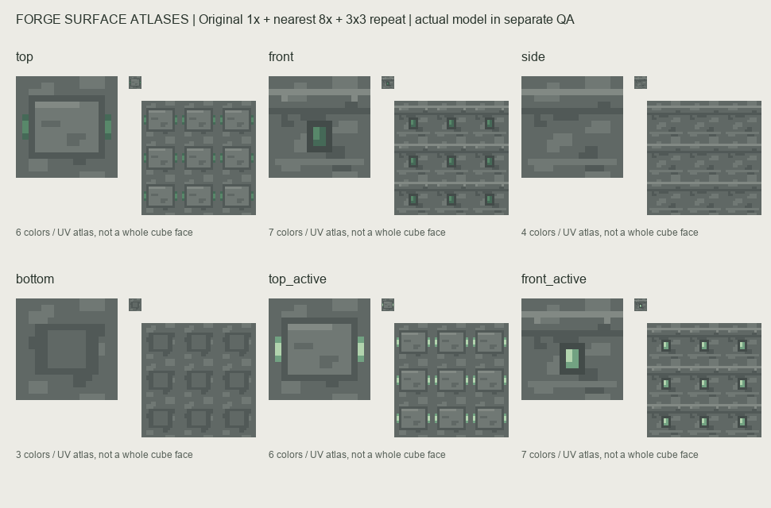
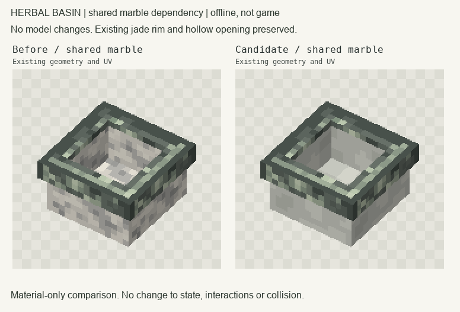
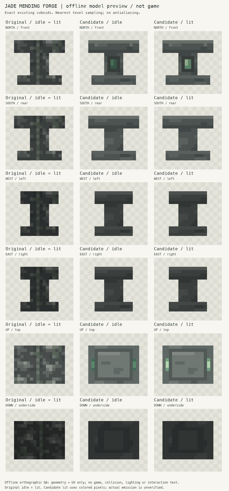

状态：仅供评审，尚未接入项目源资源，也未安装到实例。当前34张专属方块PNG都已有v9完成记录；本次不是补空白资源，而是针对有证据的风格／功能面问题提供独立改进候选。
首样：汉白玉、玉矿、玉髓修补炉。追加：龙晶矿。汉白玉同时被药浴盆复用，未来启用候选也会改变盆体石面，已附间接影响对比。保留用户确认的宫廷砖、饰品、展示架。没有修改源资源、龙口遗迹、祭坛建模、建筑、存档、Java或公共注册。
所有候选均由明确的16格像素表和整数色簇绘制。没有高分辨率缩图、随机噪声、平滑渐变、抗锯齿或第三方图案复制。修补炉几何及UV不变；只增加面与已有状态的引用分工。
45个方块ID清单 · 交付说明 · 准确路径与哈希 · 静态检查结果 · 评审用资源包（不会自动安装）








以上均为静态或离线模型预览，不是游戏截图。修补炉正面玉槽与顶部小段亮色随已有lit状态切换；原代码已有工作时10级方块光照，本轮没有新增自发光着色器或动画。材料仍放背包，所有面均能右键，图案不代表新增实体投料槽。